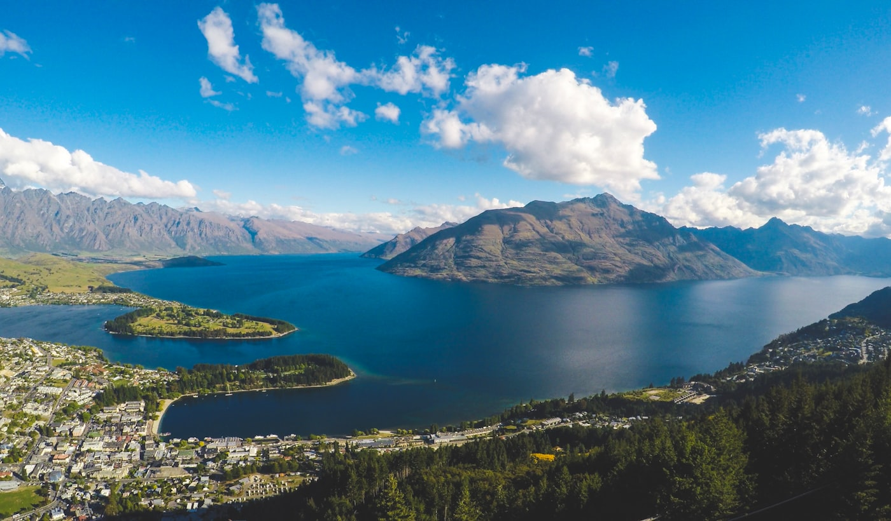
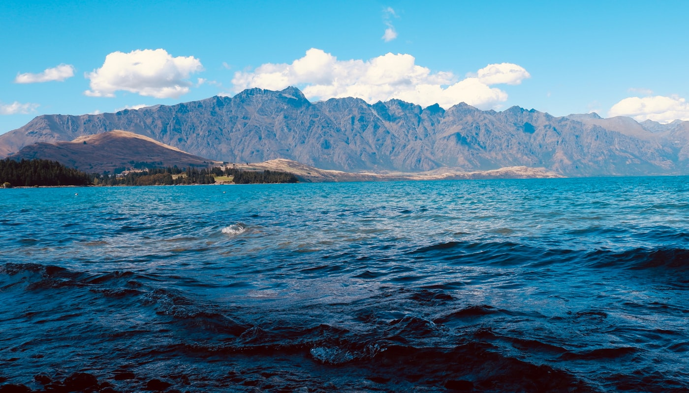

ANZWEE 2026 — Queenstown, New Zealand
About the Workshop
The annual Australia New Zealand Workshop on Experimental Economics (ANZWEE) aims to provide researchers interested in experimental and behavioural economics with an opportunity to present their latest research, receive constructive feedback in an informal environment, and network with other researchers.
ANZWEE 2026 is the 19th edition of the workshop, held in Queenstown and hosted by the Department of Economics in the University of Otago's Otago Business School. We welcome submissions from researchers at all career stages working in experimental and behavioural economics.

Important Dates
Schedule
Workshop sessions will run across Monday 16 and Tuesday 17 November 2026. Depending on the number of submissions, an early finish on Tuesday and/or a later start on Monday may be considered.
A full day of paper presentations. All presenters are invited to a workshop dinner on the evening of Monday 16 November. Please note the dinner is exclusively for presenters.
Continued paper presentations. The final schedule will be circulated to registered participants closer to the workshop date.
Join us for an optional weekend of Central Otago adventures before the workshop begins. Both activities are self-funded and weather-dependent — if you're interested, please indicate so on the submission or registration form so we can help coordinate carpooling.
A 10 km moderate hike with stunning glacier and valley views — around 4–5 hours round trip. See the Rob Roy Track (DOC) for full track details.
Getting there: you'll need to rent a car or carpool with other participants. We recommend spending the night in Wānaka, a famous tourist destination with amazing landscapes. The drive from Wānaka to the Raspberry Creek car park is about 1 hour (around 2.5 hours from Queenstown), skirting the lake and passing through the beautiful Matukituki Valley. The last 30 km is on a dirt road with several fords; unless it rained the night before, these are all passable in a compact car. The car park is at the end of the road.
Afterwards: we'll grab dinner and drinks at B.Effect Brewery back in Wānaka (60 Anderson Rd).
Bring: your own food, drink, and hiking gear.
If the weather turns: we'll do a local walk in Wānaka instead, followed by dinner and drinks.
Thanks to warm summer days, cold nights, and low-organic-matter soils, Central Otago is famous for its complex Pinot Noir. To show you the rugged terroir these wines come from, we'll taste at the Gibbston Valley, Peregrine, and Chard Farm wineries.
Getting there: you'll need to rent a car or carpool with other participants — about 1 hour from Wānaka, or 30 minutes from Queenstown.
Where We Meet

Participation
ANZWEE 2026 will be held in-person only. There is no workshop fee for ANZWEE 2026. However, we request all participants — including non-presenters — to register to confirm their attendance.
Call for Papers
We welcome submissions of papers in experimental and behavioural economics at any stage of completion. The submission deadline is Monday 17 August 2026 (any time zone).
Your submission should include your name, institution and email address; the paper title, co-authors and abstract; a few keywords; the topic area(s) your paper fits; and whether you plan to attend the workshop dinner and/or the pre-workshop social activities.
When you submit, you can tag your paper with one or more of these topic areas:
Attendance
All attendees — whether presenting or not — are asked to register so we can plan numbers. Registration is free. Please indicate whether you plan to attend the reception and dinner on Monday 16 November, and note any dietary requirements.
The Team
ANZWEE 2026 is organised by a team from the University of Otago and Macquarie University.
For enquiries, contact us at ANZWEE2026@otago.ac.nz